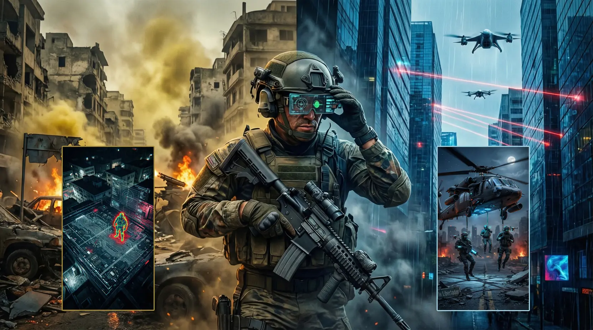

2026年1月3日，美軍在加拉加斯發動的「絕對決心行動」（Operation Absolute Resolve），目前被視為美軍特種作戰史上的一次「外科手術式」完美成功。這場行動不僅在2小時內結束戰鬥，更實現了美軍零傷亡的奇蹟。與之形成鮮明對比的是1993年摩加迪休之戰（即《黑鷹計畫》原型），後者在戰略與政治上被公認為慘敗，導致了美軍整整一代人的干預恐懼。
科技壓制：為什麼馬杜羅逃不掉？
與1993年不同，2026年的行動高度依賴AI數據集成。美軍透過NSA信號情報與長期滲透，精確掌握了馬杜羅進入安全密室的秒數差。在行動開始前，數架隱身無人機已盤旋於加拉加斯上空，配合電子干擾讓委內瑞拉防衛系統完全癱瘓。在馬杜羅的護衛隊甚至還沒來得及解開保險栓時，三角洲部隊（Delta Force）已完成精確著陸。
歷史迴響：失敗的「黑鷹」為何成為藝術經典？
《黑鷹計畫》描述的是美軍在索馬利亞的慘痛經歷。它之所以成為經典，並非歌頌勝利，而在於它誠實地轉化了「失敗」的意義。電影的核心主題 "Leave No Man Behind"（不拋棄隊友）展現了絕境中的人性光輝，而非政治正確的英雄主義。那種壓抑的色調與極致的寫實感，讓觀眾第一次觸摸到了現代巷戰的恐懼本質。
戰術轉型：從「泥潭巷戰」到「算法制勝」
1993年的摩加迪休，美軍在破碎的城市街道中陷入了由RPG和群眾戰術編織的泥潭；而2026年的行動證明，在絕對的制空權與隱身技術面前，傳統的「群眾動員」已失去反擊空間。美軍通過大規模網格化空襲摧毀了對方的指揮鏈，讓敵軍陷入「群龍無首」的混亂，這是技術對偶然性的徹底抹除。
總結：戰爭美學的終結
《黑鷹計畫》是一部探討戰爭人性的藝術傑作，其美感來自於混亂與悲劇；而「絕對決心行動」則更像是一場精準的工業生產，冷酷、高效、毫無懸念。馬杜羅目前已被押往紐約，這標誌著特種部隊運作模式的重大轉折——未來十年，戰爭將不再是關於英雄的熱血故事，而是關於算法與執行力的冰冷數據。